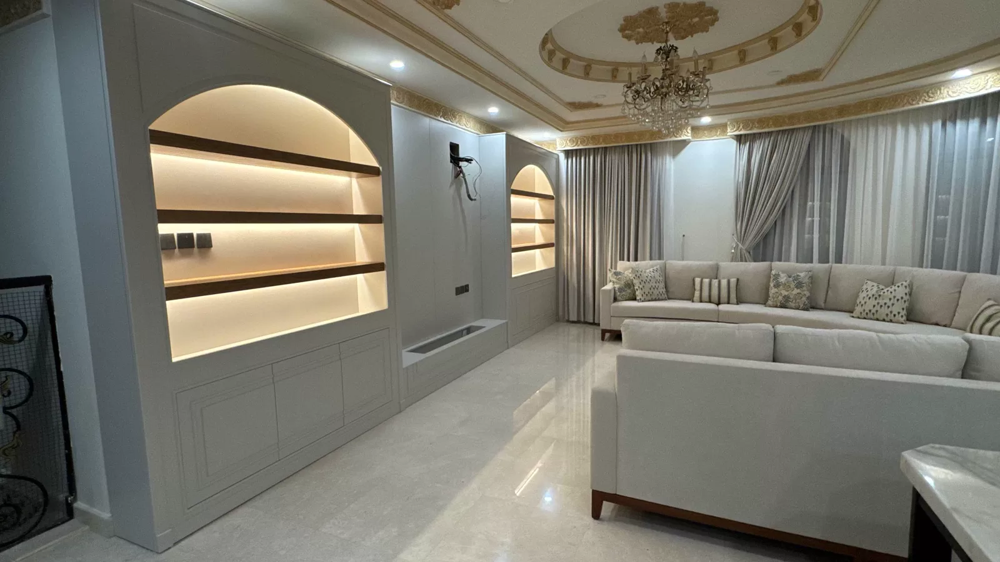

Interior catalogue · MMXXVI
مشروع صالة · تصميم وتنفيذ
صالة بمكتبات مقوسة مضيئة وكنب منحني
The Arched Lit Shelves Living Room
مكتبات جدارية بأقواس وإضاءة مخفية، وكنب منحني كبير بقماش شانيل بيج.
مشروع صالة · تصميم وتنفيذ
صالة صمّمنا جدرانها ومكتباتها وكنبها معًا: مكتبات مقوسة بإضاءة مخفية على جدار، وكنب منحني يلتف حول الغرفة على الجدار المقابل.
المكتبات وحدات جدارية من الشيبورد الرمادي الفاتح، في كل وحدة فتحة مقوسة بثلاثة رفوف من خشب الأوك الداكن، وتحت كل رف إضاءة مخفية دافئة. وأسفل الفتحة خزائن بأبواب تخزين تاتش.
الكنب منحني بطول الجدار، بقماش شانيل بيج ومقاعد عميقة، وينتهي بطرف مستقيم بذراع عريضة، ويرتكز على قاعدة وأرجل خشبية.
على الكنب مخدات بقماش مشجر وأخرى بقماش جاكار مقلّم، بألوان تربط الكنب بإضاءة المكتبات.
المساحات
الصالة
صالة واسعة بسقف جبسي وستائر طويلة. على جدار مكتبتان مقوستان بإضاءة مخفية، وعلى الجدار المقابل الكنب المنحني بطوله، وبينهما مساحة مفتوحة.
القطع
ثلاث قطع صُنعت بالمقاس لهذه الصالة: المكتبات المقوسة المضيئة، والكنب المنحني، والمخدات. افتح أي قطعة لترى صورها وتفاصيلها.
المكتبات المقوسة المضيئة
أعمال مدمجة، مصنوعة حسب المقاس
وحدات جدارية بفتحات مقوسة، في كل فتحة ثلاثة رفوف من خشب الأوك الداكن وتحت كل رف إضاءة مخفية. أسفل الفتحة خزائن بأبواب تخزين تاتش، والهيكل كله من الشيبورد الرمادي الفاتح.
الخامات: الشيبورد الرمادي الفاتح، خشب الأوك الداكن. التشطيب: شيبورد رمادي فاتح، ورفوف خشب أوك داكن، وإضاءة مخفية، وخزائن تخزين تاتش
الكنب المنحني
كنب، مصنوعة حسب المقاس
كنب منحني كبير يتبع جدار الصالة، بقماش شانيل بيج ومقاعد عميقة ومساند ظهر منفصلة. ينتهي بطرف مستقيم بذراع عريضة، ويرتكز على قاعدة وأرجل خشبية.
الخامات: الشانيل البيج. التشطيب: شانيل بيج على قاعدة وأرجل خشبية
المخدات
مفروشات
مخدات مربعة بقماش مشجر، ومخدات مستطيلة بقماش جاكار مقلّم بحواف مهدّبة، موزعة على طول الكنب.
الخامات: القماش المشجر، قماش الجاكار. التشطيب: قماش مشجر وقماش جاكار مقلّم
الخامات
- الشيبورد الرمادي الفاتح: هيكل المكتبات والخزائن السفلية، بتشطيب مطفي وأبواب تخزين تاتش.
- خشب الأوك الداكن: رفوف الفتحات المقوسة، وتحت كل رف إضاءة مخفية.
- الشانيل البيج: قماش الكنب المنحني ومساند الظهر والأذرع.
- القماش المشجر: قماش جزء من المخدات بنقش نباتي.
- قماش الجاكار: قماش المخدات المقلّمة.
تريد صالة مثل هذه؟
نصمّم المكتبات والكنب معًا، ونصنعها بمقاس جدرانك. أرسل لنا تفاصيل مساحتك ونبدأ.